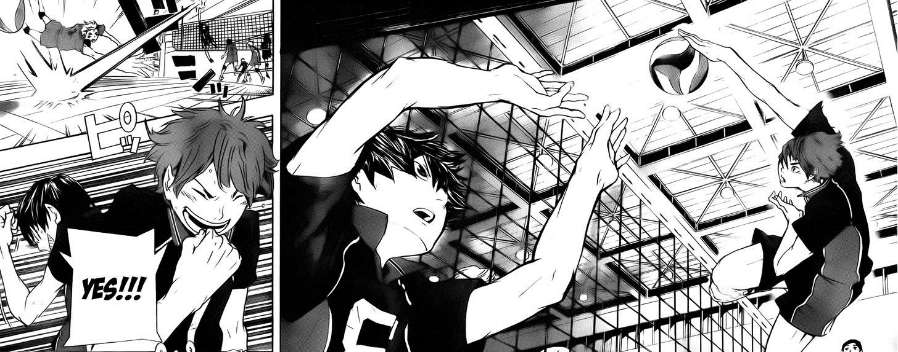
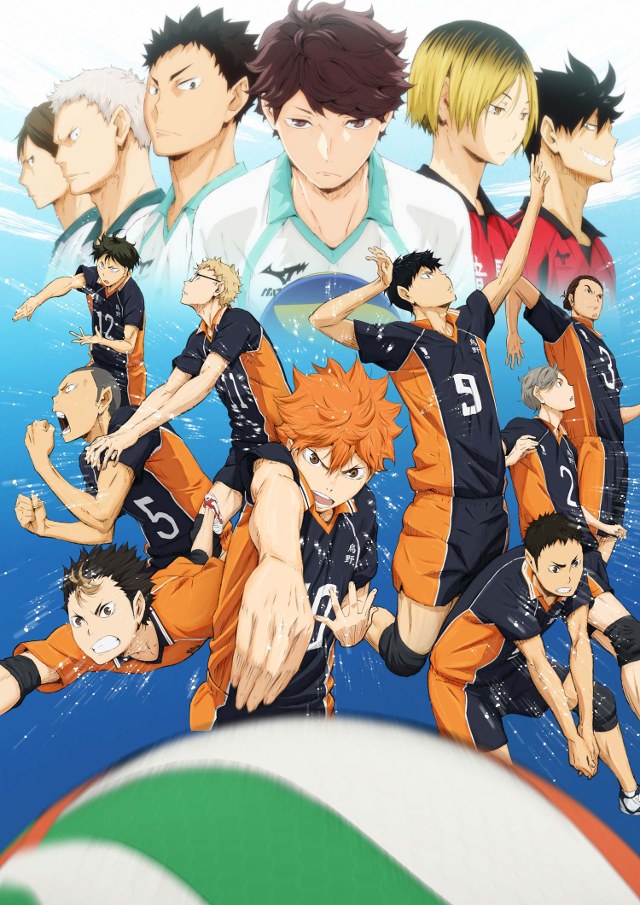

Manga
Escrito e ilustrado por Haruichi Furudate, el manga ha sido serializado en la revista Weekly Shonen Jump de Shueisha desde febrero de 2012. En diciembre de 2014, la obra vendió doce millones de copias.Durante el New York Comic Con, VIZ Media anunció que licenciaría el manga y su publicación comenzaría en 2016.
Radio drama
Un radio drama del manga fue auspiciado en noviembre de 2012 en el programa Sakiyomi Jum-Bang! de TV Tokyo, con múltiples actores de voz para los personajes.
Anime
Una serie de anime para televisión fue producida por el estudio Production I.G, siendo estrenada el 6 de abril de 2014 a las 5:00 p.m por MBS y TBS junto a otros canales nacionales, contando con un total de 25 episodios.En los primeros trece capítulos, el tema de apertura fue «Imagination» del grupo Spyair y el tema de cierre, «Tenchi Gaeshi» por NICO Touches the Walls.Desde el episodio quince el opening es interpretado por Sukima Switch, titulado «Ah Yeah!!», mientras que el ending es «LEO» e interpretado por Tacica.Además, cuenta con una OVA proyectada en el Jump Special Anime Festa de 2014 a principios de noviembre, el cual sería más tarde puesto a la venta el 4 de marzo en una edición limitada del tomo 15 del manga.
La cuarta y quinta edición combinada de la revista Weekly Shonen Jump de 2015, anunció una segunda temporada del anime que se estrenó el 4 de octubre de 2015, también de 25 episodios.Para esta temporada se sumaron dos canales de televisión Tokyo MX y BS11, tanto el staff como el elenco regresaron para repetir sus roles.Desde los episodios 1-13, el opening es «I'm a Believer» nuevamente de Spyair, mientras que el ending es «Climber» de la banda Galileo Galilei.Desde los episodios 14-25, el tema de apertura es «FLY HIGH» de Burnout Syndromes, mientras que el tema de cierre es «Hatsunetsu (Fever)»de Tacica.
Una tercera temporada de sólo 10 episodios que llevó como título Haikyu!! Karasuno High School vs Shiratorizawa Academy Haikyu!! Koko VS Shiratorizawa Gakuen Koko) fue anunciado en la decimosexta edición de 2016 de la revista Weekly Shonen Jump, con lanzamiento previsto para el 8 de octubre de 2016.4?5? El tema de apertura es «Hikari Are» de Burnout Syndromes, mientras que tema de cierre es «Mashi Mashi» de NICO Touches the Walls.
Durante la Jump Fest 2019, se anunció la continuación de la serie, con más detalles para el día 22 de septiembre de 2019 , en el cual se celebrará los 5 años de emisión desde el primer capítulo
Películas recopilatorias
Las películas de recopilación complementarias se han lanzado después de la transmisión del anime en televisión. Después de la primera temporada y antes de que la segunda temporada se emitiera en 2015, se lanzaron dos películas de recopilatorias. La primera de ellas, prevista para el 3 de julio, se titula Gekijouban Haikyu!! Owari to Hajimaru. La segunda se anunció para el 3 de noviembre, cuyo título es Gekijouban Haikyu!! Shosha to Haisha. Se anunciaron dos películas recopilatorias más en otoño de 2017 después de la tercera temporada que se emitió en 2016. Ambas películas fueron estrenadas en cines japoneses en septiembre: la primera película, Gekijouban Haikyu!! Saino to Sense el día 15 y la segunda película, Gekijouban Haikyu!! Concept no Tatakai, el 29 del mismo mes.